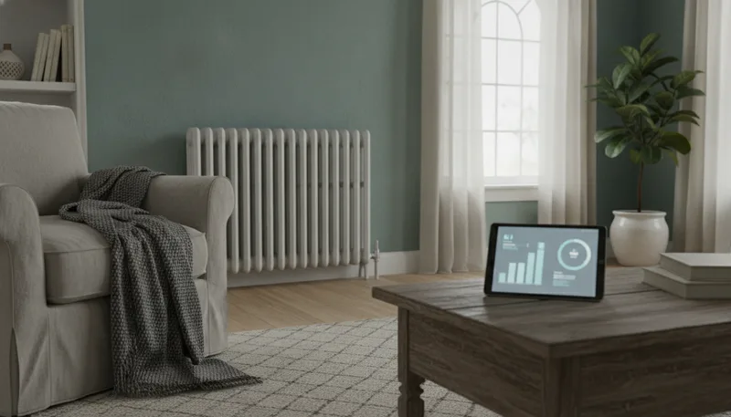

2026 동절기 에너지바우처 난방비 지원 대상 조회와 신청 절차
겨울철 난방 고지서 부담을 줄이는 동절기 에너지바우처
찬 바람이 불기 시작하고 계절이 바뀌면 매달 찾아오는 고지서 속 난방비 금액부터 떠올라 마음이 무거워지기 쉽습니다. 기후에너지환경부와 한국에너지공단에서는 저소득층 가구의 따뜻한 겨울나기를 지원하기 위해 동절기 에너지바우처 사업을 운영하고 있습니다.

올해 운영되는 동절기 에너지바우처는 어떤 결제 수단을 고르느냐에 따라 실제 사용을 시작할 수 있는 날짜에 차이가 있습니다. 지원 대상에 본인이 들어가는지 면밀히 파악하고 필요한 서류를 챙겨 기한 내 접수하는 과정이 무엇보다 중요합니다. 세부적인 자격 요건부터 접수 수단별 차이점과 잔액 관리 요령까지 하나씩 살펴보겠습니다.
동절기 에너지바우처 지원 대상과 자격 요건
지원 혜택을 받기 위해서는 소득 조건과 세대원의 특성 기준을 모두 충족하고 있어야 합니다. 두 가지 요건 중 하나라도 빠지면 최종 대상에서 제외되므로 본인의 가구 현황을 미리 짚어볼 필요가 있습니다.
소득 기준과 급여 유형 조건
소득 측면에서는 국민기초생활 보장법에 따라 수급자로 지정되어 있어야 합니다. 세부적으로는 생계급여 수급자, 의료급여 수급자, 주거급여 수급자, 교육급여 수급자 중 어느 하나에 해당할 때 기본 소득 기준을 통과하게 됩니다.
세대원 특성 기준 8가지 유형
소득 조건을 만족했더라도 세대원 구성 특성이 기준에 들어 맞아야 최종 발급이 진행됩니다. 수급자 본인이나 주민등록표 등본에 함께 올려진 세대원 가운데 노인, 영유아, 등록장애인, 임산부, 중증·희귀·중증난치질환자, 한부모가족, 소년소녀가정, 다자녀가구 중 어느 하나라도 포함되어 있어야 지원 대상으로 결정됩니다.
노인은 주민등록 기준 연령을 확인해야 하며, 중증·희귀·중증난치질환자는 관련 법령에 따른 산정특례 등록 여부가 기준이 됩니다. 한부모가족과 소년소녀가정, 다자녀가구 역시 등본상 가구원 구성에 맞춰 대상자 여부가 가려지므로 신청 전 세대원 명단을 점검해 두는 편이 좋습니다.
지원 대상에서 제외되는 보장시설 거주 가구
소득과 세대원 특성을 모두 채웠더라도 예외적으로 지원받지 못하는 상황이 있습니다. 세대원 전원이 국민기초생활 보장법에 지정된 보장시설에 입소하여 급여를 지급받는 경우가 여기에 해당합니다. 보장시설 내부에서 주거 환경과 난방이 종합적으로 관리되는 특성을 감안한 규정이므로 거주 형태를 미리 확인해 두어야 합니다.
요금차감과 국민행복카드 결제 방식 선택 가이드
신청서를 써 내려갈 때 독자들이 가장 많이 고민하는 대목이 바로 바우처 결제 방식을 정하는 문제입니다. 본인 가구에서 가장 주로 사용하는 난방 에너지원이 무엇인지에 따라 선택 방향을 명확히 잡아야 시행착오를 줄일 수 있습니다.
전기·도시가스·지역난방 이용 가구를 위한 요금차감
집에서 전기나 도시가스, 지역난방을 주된 난방 수단으로 쓰고 있다면 요금차감 방식이 편리합니다. 카드 실물을 따로 들고 다니며 결제할 필요 없이 매달 집에 배달되는 고지서 청구액에서 바우처 금액만큼 차감되어 나오기 때문입니다.
요금차감 방식을 선택했을 때 동절기 바우처를 사용할 수 있는 기간은 2026년 10월 1일부터 2027년 5월 31일까지입니다. 해당 기간 내 발행되거나 청구된 고지서에 차감 금액이 자동 적용되는 구조입니다.
등유·LPG·연탄·현장 결제 가구를 위한 국민행복카드
반면 난방용 등유나 LPG 가스, 연탄을 직접 구매해서 쓰거나 전기 및 가스요금을 현장에 찾아가 직접 결제하는 가구라면 실물 카드인 국민행복카드를 발급받아야 합니다.
국민행복카드 방식의 동절기 바우처 사용 가능 기간은 2026년 10월 3일부터 2027년 5월 31일까지로 설정되어 요금차감 방식과 개시일에 이틀 차이가 납니다. 난방 에너지원과 맞지 않는 방식을 골라 신청하면 가맹점 결제 승인이 거절되어 행정복지센터를 재방문해야 하는 불편함이 생길 수 있으므로 사전에 정확히 판단해 선택해야 합니다.
2026년 동절기 에너지바우처 신청 기간과 접수 방법
2026년 동절기 에너지바우처의 전체 신청 기간은 2026년 6월 15일부터 2026년 12월 31일까지입니다. 접수 창구는 직접 창구를 찾는 방문 신청과 인터넷을 활용한 온라인 신청으로 구분됩니다.

행정복지센터 방문 신청 절차 및 필요 서류
오프라인 방문 접수를 원할 경우 주민등록지 관할 읍·면·동 행정복지센터를 찾아가면 됩니다. 본인이 직접 가기 어렵다면 대리인이 대신 신청하는 것도 가능한데, 이때는 위임장과 대리인의 신분증을 반드시 지참해야 접수가 처리됩니다.
요금차감 방식을 고르고자 하는 분은 가장 최근에 전달받은 전기요금 고지서나 도시가스 납부고지서를 챙겨 방문하면 전산 조회 과정이 훨씬 수월해지고 빠르게 처리됩니다.
복지로 홈페이지를 이용한 온라인 신청 방법
센터 방문이 번거롭다면 복지 포털 복지로를 통해 안방에서 간편하게 신청할 수 있습니다. 복지로 사이트에 접속한 뒤 공동인증서나 간편인증으로 본인 확인을 거쳐 로그인합니다.
상단 메뉴의 복지서비스 신청으로 이동하여 에너지바우처 항목을 고르고, 안내에 따라 가구원 정보를 입력해 제출하면 온라인 접수가 마무리됩니다.
전년도 수급 가구의 자동 등록 기준과 주의할 점
지난해에 에너지바우처를 지원받았던 가구 중 올해도 지원 자격에 변동이 없고 세대원 구성이 동일하게 유지되고 있다면 별도의 신청서를 제출하지 않아도 자동으로 수급자로 등록됩니다.
그러나 그사이 이사를 해서 주소지가 변경되었거나 세대원 수가 늘고 줄어드는 등 정보 변동이 생겼다면 자동 등록 대상에서 빠지게 됩니다. 정보 변동 가구가 재신청 절차를 놓치면 지원을 받지 못할 수 있으므로, 관할 행정복지센터 담당자에게 자격 유지 상태를 확인해 보는 편이 안전합니다.
동절기 바우처 현명한 사용법과 잔액 관리 수칙
지원 대상으로 최종 승인되었다면 본인이 고른 결제 방식에 맞춰 동절기 사용을 시작하면 됩니다. 잔액을 남기지 않고 알뜰하게 쓰는 관리 요령을 알고 있어야 혜택을 온전히 누릴 수 있습니다.
국민행복카드 가맹점 결제 및 잔액 소멸 기준
국민행복카드를 지참하여 등유 판매소나 가스 충전소, 연탄 판매점 등 지정된 가맹점을 찾아가면 지원금 한도 안에서 결제가 진행됩니다.
여기서 꼭 기억해야 할 부분은 사용 마감일 관리입니다. 사용 기한인 2027년 5월 31일까지 쓰지 못하고 남은 바우처 잔액은 다음 연도로 이월되지 않고 전액 소멸 처리됩니다. 따라서 2027년 5월 31일 마감일이 찾아오기 전에 남은 지원 금액을 차근차근 전부 소비하는 계획이 필요합니다.
요금차감 가구의 고지서 차감 내역 점검법
요금차감을 이용하는 가구는 매월 우편이나 모바일로 전달되는 난방비 고지서에서 차감 내역을 확인해야 합니다. 아파트 등 공동주택 거주자는 단지 관리비 고지서 항목에 에너지바우처 차감 금액이 표시됩니다.
만약 난방을 사용했는데도 고지서에 차감액이 정상적으로 반영되지 않았다면 즉시 관할 에너지 공급업체(도시가스사, 한국전력, 지역난방공사 등)나 행정복지센터에 연락해 본인의 차감 신청 정보가 올바르게 연결되어 있는지 점검을 요청해야 합니다.
공식 안내 창구를 통한 세부 운영 기준 조회
바우처 지원 조건이나 세부적인 운영 기준은 제도 개편에 따라 해마다 조금씩 변동될 수 있습니다. 지원 금액 및 단가 등 세부 안내는 한국에너지공단 에너지바우처 공식 홈페이지에 게시되는 연도별 사업 공고문을 확인하여 최신 기준을 파악해 두는 것이 바람직합니다.
에너지바우처 이용자가 자주 묻는 질문 3가지
작년 수급 가구의 올해 신청서 재제출 여부
작년에 에너지바우처를 이용했던 가구라도 가구 현황에 따라 재신청 필요 여부가 달라집니다. 소득 자격이 유지되고 주민등록 등본상 세대원 구성에 아무런 변화가 없다면 별도 서류 제출 없이 자동으로 신청이 완료됩니다.
다만 이사를 거치며 거주지 주소록이 바뀌었거나 세대원의 전입·전출로 가구원 수가 달라졌다면 기존 정보가 연동되지 않습니다. 이 경우에는 주민등록지 읍·면·동 행정복지센터를 찾아가 변경된 가구 정보를 바탕으로 신규 또는 재신청서를 다시 제출하셔야 합니다.
여름철 하절기 바우처 미사용 잔액의 이월 여부
여름철 하절기 바우처를 할당받아 사용한 뒤 잔액이 남았다면 이 금액이 어떻게 처리되는지 궁금해하는 분들이 많습니다. 여름에 다 쓰지 못하고 남은 하절기 바우처 잔액은 버려지지 않고 동절기 바우처로 자동 इ월 적용됩니다.
주민이 별도로 이월 신청서를 작성하거나 센터에 요청하지 않아도 시스템상에서 겨울철 난방비 사용 한도로 자동 합산되어 통합 적용되므로 안심하고 난방 결제에 활용하시면 됩니다.
요금차감 방식을 국민행복카드로 변경하는 방법

최초 신청 시 요금차감을 선택했다가 사정이 생겨 국민행복카드 결제 방식으로 바꾸고 싶다면 바우처 사용 기간 중이라도 변경이 가능합니다. 거주지 읍·면·동 행정복지센터를 직접 찾아가 사용 방식 변경 신청서를 제출하면 됩니다.